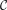
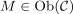
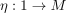
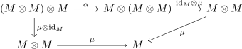
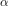
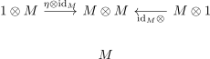

monoid object
1. Definition
Let

be a category and
. Then is said to be a monoid object, if
is said to be a monoid object, if
- there exists a morphism

for the tensor unit
- there exists a morphism for the <> , called the multiplication functor
- associativity holds, i.e.

for the associator

- the
